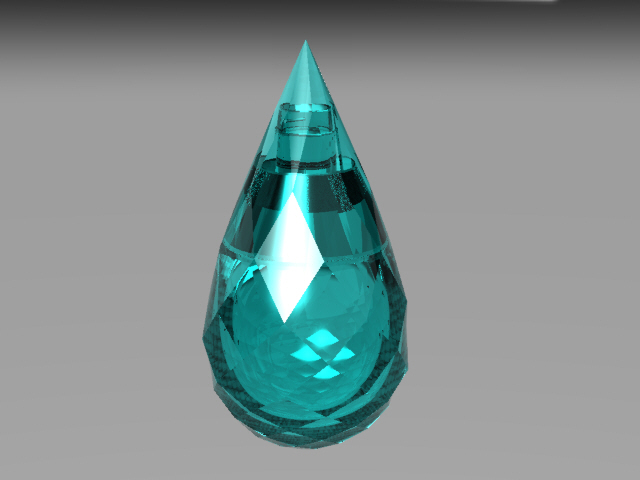
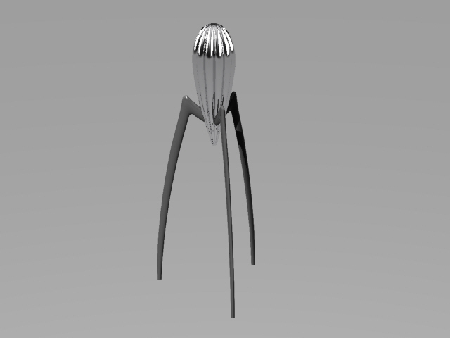
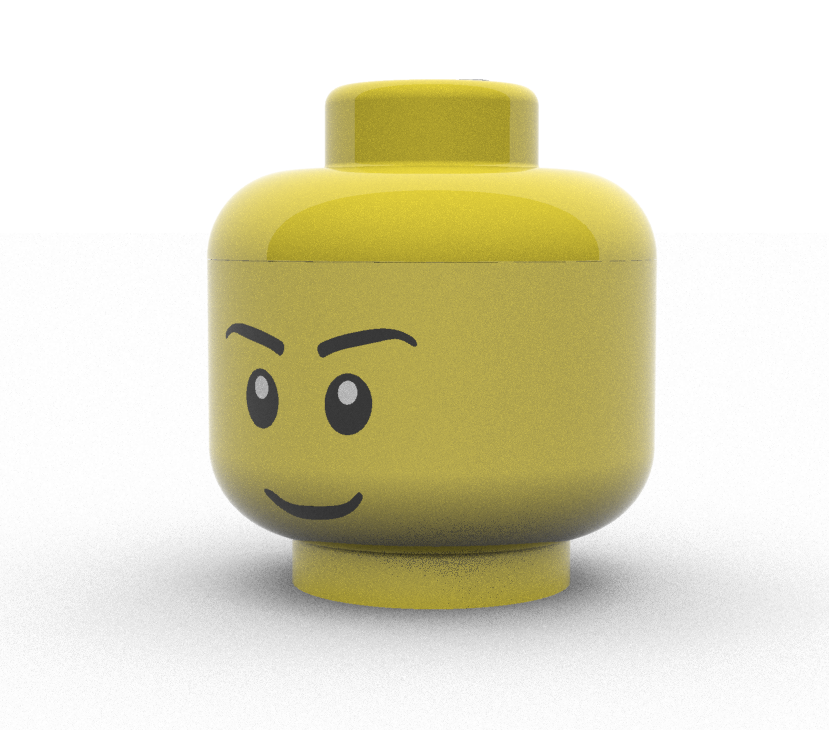

Home
Portfolio
Blog
Github
About
Portfolio

향수병 디자인 및 모델링
Rhino 프로그램을 이용한 향수병 디자인 및 모델링을 진행해보았습니다. 물방울 모양을 활용해 유리 소재의 물병을 디자인하고 모델링 하였습니다.
Read more.

주스 착즙기 디자인 및 모델링
Rhino 프로그램을 이용한 주스 착즙기 디자인 및 모델링을 진행해보았습니다. 문어 모양 을 활용해 스테인리스 소재의 주스 착즙기를 디자인하고 모델링 하였습니다.
Read more.

레고 머리 모양 수납함 디자인 및 모델링
Rhino 프로그램을 이용한 레고 머리 모양 수납함을 디자인 및 모델링을 진행해보았습니다. 레고 머리 모양을 활용해 플라스틱 소재의 수납함을 디자인하고 모델링 하였습니다.
Read more.